“我们数学家都有点儿古怪。”德国数论学家埃德蒙·兰道（Edmund Landau）1935年在剑桥大学遇见爱多士时说。这是爱多士（尽管他还年轻）不能不同意的一个观点，虽然他认为这种古怪与其说是麻烦，不如说是乐趣。事实上古怪不古怪对爱多士来说并无所谓；从其数学之旅一开始，爱多士就经常长途跋涉去会见每一个能够做出漂亮证明和猜想的人，他在这方面是如此锲而不舍。
3年前，爱多士大学时代的一个朋友，在杰内拉利保险公司工作的桑多尔·凯梅尼（Sándor Kemény）给他介绍了一个名叫希东（S. Sidon）的合作者。“他是一个不错的数学家，”爱多士回忆道，“就是比常人古怪一些。实际上他是一个边缘精神分裂症患者。”希东是那么害羞，以至于说话的时候常常面对着墙壁，“但是当他谈到数学的时候却见识非凡。”希东敏锐的观察力给爱多士留下了深刻的印象，并且爱多士确信他的朋友保罗·图兰也有相同的看法。爱多士便来充当数学红娘了，他终其一生都常常致力于此且成果斐然。不幸的是，希东是一个很勉强的“新郎”。
两个保罗——19岁的爱多士与22岁的图兰——两人突然出现在隐居的希东家门前的石阶上。他们叩门，门开了一道小缝，希东充满怀疑的目光从门缝里盯着这两位年轻的不速之客，他们解释了来访的原因。“请另找个时间再来访问吧，特别是请访问另外一个人。”希东说。“在匈牙利语中，这句话还蛮好听的。”爱多士指出，“kérem, jöjjenek máskor és különösen máshoz”这句话，以合适的口音拉长语调说出来时有一种相当悦耳的节奏。
爱多士没有被赶走。最后希东“终于通情达理了”，他邀请这两位年轻数学家进去聊天。交谈的结果就是现在我们所知的“希东集”理论的诞生，在与图兰的一篇早期合作论文中，爱多士简要地发展了这个理论；显然，希东是少数几个爱多士不能拉来做合作者的数学家之一。
在他们第一次会面时，希东问爱多士，能否证明他所描述的一组特殊性质的整数列确实存在。“我告诉他，那是一个很好的问题，我相信你是对的，我希望几天之内能给你答案。”19岁的爱多士吹牛说。后来他承认，他“有点儿太乐观了。我最后确实证明了，但却花了20年的时间”。几年之后希东死了，以至于他未能活着看到爱多士炫耀才能的证明。“实际上他死得有些蹊跷，”爱多士对他的讲座听众说，“他的死与贝热拉克(1)相似：一架梯子落在他身上砸断了他的腿，结果他在医院死于肺炎。”用表达友谊的典型方式，爱多士把自己迟到的证明献给希东以志纪念。(2)
爱多士无限的精力，他对数学交谈、合作与交流的近乎贪婪的渴求，以及爱多士出名的个人癖性，这一切早在他的布达佩斯大学时代就已表现得很清楚。爱多士最早的合作者、比他年长几岁的塞凯赖什回忆说，当他第一次遇见爱多士时就“发现在他身上笼罩着一种令人迷惑的气息。不管你怎样说，他绝对是个神经质的人”。塞凯赖什回忆说，一次，爱多士与他的一群朋友在无名雕像下一起坐在凳子上，“不知何故他突然站了起来，急速地走过来走过去，然后坐回到凳子上。有一位老太太看到此事就把我叫到一边问，‘这小伙子怎么啦？’其实什么事都没有。我们正在讨论，他的头脑中可能突然想起了什么，于是跳起来把思绪整理好之后就回来了。他给旁观者一个非常古怪的印象……我想我们与他都做着正事。我们的行为完全是自然的，我们对此都能够接受”。
爱多士的父母深受他的朋友们爱戴，他们经常拜访位于犹太高级中学对面奥博尼大街8号爱多士家宽敞摩登的布达佩斯公寓。“对学生们来说，那是一座开放的屋子。”一位常客埃丝特·克莱因高兴地回忆说。爱多士的父母循循善诱，热情好客，特别是，对爱多士那些手头拮据的朋友们来说，爱多士的父母作为老师，能够不时地向他们提供需要家教的学生的名单。在爱多士家里，保罗的朋友们能够亲眼目睹他母亲对他无微不至的呵护。塞凯赖什回忆，就在爱多士首次离开匈牙利之前，爱多士的母亲把塞凯赖什叫到一旁表达了她的一个个人请求。她恳求他能保证，当爱多士在国外的时候，不管是她还是她的丈夫死了，他都能够在爱多士面前守口如瓶，这样就不会使爱多士痛苦也不会影响他的学习。“那就是人们所说的过度保护。”塞凯赖什评论说。
爱多士母亲的“过度保护”是感人的。瓦佐尼回忆他曾收到过来自安娜·爱多士的一封信。像许多母亲一样，她关心着儿子的未来，但她也许比其他许多母亲有更好的理由。爱多士毕竟已经选择了一项追求的事业，而在匈牙利，这种职业对于犹太人来说是没有前途的。况且他还是一个书呆子，痴迷数学，缺乏独立生活的能力。最糟糕的是，他完全不关心自己的未来。“我的儿子情况如何？”她忧心忡忡地写道，“他将怎样挣钱谋生呢？”瓦佐尼回答她说：“对一个天才来说，普通人的生活规则是不适用的……他会应付好一切的。不管怎样，朋友们对他无限信任。”
更有甚者，母亲尽力保护爱多士不被女人所控制。一天，正与女友一起在城市公园散步的瓦佐尼遇到了爱多士。这两个人陪着爱多士回到了附近的公寓楼。布达佩斯的许多公寓大楼中央都围着一个大天井，从周围一圈阳台上可以看到天井。“正当我们走进天井的时候，”瓦佐尼回忆，“突然一声尖叫回荡在天井上空，‘那个女人是谁？’所有的人都能听到爱多士母亲那惊恐不安的呼喊。‘是瓦佐尼的女朋友阿兰卡。’爱多士恭顺地说，母亲安静下来。朋友的女友是安全的，［因为］她已经绝对处在其他人的追求范围之外了。”
爱多士终生未婚，他对性问题的态度对他的朋友们来说始终是个谜。在希塞里（George Csicsery）有关爱多士的一部引人入胜的纪录片《N是一个数》中，爱多士对这个问题做了一个多少有些含糊的回答：“正如有人所指出的，‘他喜欢女孩，但不喜欢她们代表的东西’。”不管这里所说的“东西”确切的意思是什么，它并未阻止爱多士将女人发展为亲密朋友和合作者。这一点可以从数学家们喜欢说的一则笑话得到有趣的体现：在爱多士频繁的横跨美国之旅中，有一次他决定乘火车。幸运得很，他发现自己的座位挨着一个美貌绝伦的年轻女郎。于是，两个人便开始聊了起来，从一个话题谈到另一个话题。到火车驶进佩恩火车站时，他们已经完成了一篇合作论文。
爱多士确实至少与一位女士有过超出数学的关系。20世纪60年代某日，当时正在洛杉矶工作和生活的瓦佐尼收到了爱多士的电话。“Itt vagyok!”他打了招呼。“我在这儿。”这是他每一个电话的开场白。爱多士刚刚到达加州大学洛杉矶分校，就立即把瓦佐尼召唤到咖啡馆。瓦佐尼对这种事早已习以为常；爱多士不会驾车，结果每当爱多士来到这个地区，瓦佐尼就成了他的私人司机。不过这一次爱多士可有些叫人纳闷。“瓦佐尼，你不必再载着我到处逛了。”爱多士声明。
“爱多士，这是什么意思？”瓦佐尼问道。
爱多士解释说，他遇到一位荷兰物理学家，一位名叫乔·布吕宁（Jo Brüning）的女士，她可以驾车送他到任何要去的地方。“这使我大吃一惊，”瓦佐尼边摇头边回忆说，“不管我陪爱多士到哪里，每一次乔都在那里。”在爱多士的倡议下，他们访问了加利福尼亚天主教团，不过乔是一个虔诚的新教徒，她拒付参加天主教布道的入场费并顽固地守在外面。他们俩还与瓦佐尼结伴去拉古纳海滨旅行，结果败兴而归。爱多士事先为乔和他自己预定了两间房，但是在旅馆注册的时候却发现只有一间房可用。前台服务员颇为抱歉，瓦佐尼则建议他们俩共住一间房。爱多士转过身，非常愤怒地喊道：“不行，绝对不行！”后来乔向瓦佐尼的妻子劳拉倾诉说要与爱多士断交：“我不愿意再给他当司机。”
爱多士与布吕宁的关系几乎是一个注定要失败的实验。“我有些不正常，”爱多士在希塞里的电影里解释说，他的声音充满了痛苦，“我无法经受性爱的欢乐。”爱多士即使对最轻微的身体接触也会敬而远之；当陌生人跟他握手时，他最多也就是虚虚伸手与对方的手轻轻擦一下。即使是快速偶然的接触也会令爱多士感到不舒服，一整天都在强迫自己洗手。
爱多士一生痛恨孤独，他会利用一切机会置身于朋友和同事们之中。他喜欢与朋友在一起，特别是那些有孩子的朋友，这些孩子管他叫保罗叔叔。但爱多士从来不会在某个地方待很长时间，即使是在人群中间，在他那神圣的个人空间的包围下，他也会陷入深深的孤独。他总认为是他的“不正常”造成了他的天马行空。看到爱多士在希塞里的电影里漫步穿过公园和走廊，你一定会被他极端的孤独所触动。爱多士把他自己这种极度的抽离看作他的心理组成的根本部分，看作既是痛苦也是力量的源泉。“我有一个基本特点，总是想与众不同，”他解释说，“那是非常非常根深蒂固的，从很小的时候开始，我就会自动地抗拒使我趋同于他人的压力。”
无人知晓爱多士讨厌身体接触的根源，尽管一个家族成员认为，问题应归因于他先天的体格状况。不管是什么原因，都不能阻止爱多士母亲偶尔的试探。有一次，在匈牙利巴拉顿湖举行的聚会上，爱多士的朋友兼合作者亚诺什·保奇（Janos Pach）听到爱多士的母亲喊：“保罗，你为什么没有孩子？”
“母亲，你是不是觉得我阳痿？”他回答。
爱多士圈子里的年轻数学家大都（虽然不是全部）是男性，他的这些男性朋友中许多人都如同迷恋数学一样迷恋女人。他们常去看电影并盯着漂亮的美国女演员直瞧，爱多士可从不奉陪。瓦佐尼回忆说他们喜欢通过谈论与性有关的事情来刺激爱多士。有一次，朋友们去拜访爱多士，他正在把食品打包准备邮寄到中国去，以救济那里的饱受内战之苦的老百姓。他们跟他开玩笑说，如果他能陪他们去看脱衣舞表演，他们就给他100美元的奖赏。因为知道爱多士的性神经质，他们以为他们的钱一定很安全。不料爱多士居然表示同意，这使他们大为吃惊。看完表演后，爱多士笑嘻嘻地把钱收起来说：“瞧你们这群无聊的家伙，我耍了你们。我摘了眼镜什么也没看见！”
用“无聊”这个词来指代愚蠢，这只不过是数学家们所共知的爱多士语言中的一例专门用语。爱多士语言是爱多士从大学时代就开始发明的，在语源学上与数学术语一脉相承。例如，爱多士喜欢小孩，他一直把小孩子称为“埃泼西龙”（epsilon），这个名字来源于希腊字母ε，数学家用它表示趋于零的任意小量。在他的朋友拉斯洛·奥尔帕尔（László Alpár）因参加共产党学生活动于1933年被捕入狱时，爱多士通知朋友说“L. A.正在研究约当定理(3)”。约当定理叙述了一个似乎显而易见但证明起来却极其困难的事实，即任何封闭曲线把平面分成内外两部分。爱多士的意思是说奥尔帕尔现在监狱内部。爱多士语言是有教育意义的：塞凯赖什就是从爱多士的双关语中第一次学到这条重要的定理。
这种迂回的表达方法是一种学究式的逗乐，但也可以派实际的用场。谈论政治事件如果被窃听是很危险的。因此在爱多士语言中，苏联总是用“乔”（Joe）即约瑟夫·斯大林（Josef Stalin）来代替，美国则说成“山姆”（Sam）。爱多士会用自己的语言给埃泼西龙们朗诵一首著名的儿歌：山姆与乔爬上山，他们去抢一桶水……他会一本正经地向纠正他的人解释说，杰克（Jack）和吉尔（Jill）是伊丽莎白时代的政客；共产主义者则用“长波”来指代，因为在可见光谱中红色光的波长最长。
在那些日子里，爱多士对音乐还不太感兴趣，他把音乐说成“噪音”。即使他后来喜欢音乐了，还把它说成噪音，这个措辞倒很适用于他的房东，因为他不得不忍受爱多士成天放收音机里的音乐。他很少喝酒，酒的代名词就变成“毒药”。政治上不太恰当的词汇是他关于人类关系的措辞。一个朋友结婚了，爱多士就说他“被擒了”。妻子是“老板”，丈夫是“奴隶”。他一直未弄明白这种说法为什么惹怒了他的一些朋友，实际上，在他的许多女性合作者中没有一个人曾经注意到他身上有丝毫的性别主义。对这些措辞的解释可能很简单：匈牙利人的妻子传统上把丈夫称为“主人”，爱多士恰恰反其道而行之。
爱多士创造的最有趣的新词可能是“最高法西斯”（Supreme Fascist）或SF，这是他对自己并不信仰的上帝的称呼。爱多士的观点就是，人类与SF之间的关系基本上是一场我们不得不参加又注定要失败的不公平比赛。SF是所有最佳数学证明之书的作者，他把内容隐藏起来，这是SF的残忍之处。为此，我们不得不自己耗尽我们的心智和直觉去重现SF的隐藏之书中的内容。当被问到：“生命的目标是什么？”爱多士就会回答：“去证明，去猜想，让SF得低分。”他认为人类不断地卷进一场与SF之间生死攸关的严酷比赛，在这场赛事中：“如果你做了不好的事，SF就至少得到2分。如果有些事你能做却没有做好，SF至少得1分。如果你做得不错则无人得分。”人类无法赢得这场比赛，所以，生命的目标不是胜利。“目的是让SF得低分。”
随着世界卷入另一场灾难性的战争，爱多士那关于SF统治人类的宇宙观似乎变得合理了。在那个荒唐的年代他和朋友们躲在数学这个理性的王国里。他们经常到布达山郊游，继续在城市公园中聚会，但讨论重点却开始从解决实际问题和刷新已知的结果转向创造性的工作及合作研究。塞凯赖什领先图兰几个月成为爱多士的第一个合作者。图兰与爱多士的合作则贯穿了他的余生，他们合写了30篇论文。
瓦佐尼是另一个早期的但也许有些被动的合作者。瓦佐尼曾经研究过与大名鼎鼎的哥尼斯堡七桥问题相关的问题，许多数学家认为图论（graph theory）领域可溯源于这个哥尼斯堡七桥问题。在普鲁士城市哥尼斯堡（现称加里宁格勒），有一条名叫普雷格尔的河流穿城而过。一座名叫克奈普霍夫的小岛位于普雷格尔河的河岔中间，七座小桥形成一个网络，连接着小岛与河岸。
在温和宜人的傍晚，哥尼斯堡的市民喜欢散步穿过城中的七座桥，在散步过程中自然地产生了一个问题。是否可能设计一种走法，从每座桥经过一次而且仅仅一次？伟大而多产的瑞士数学家欧拉于1736年解决了这个问题。欧拉在数学产出方面仅次于爱多士；(4)他一生写了886部书和论文。其中超过一半是他在58岁双目失明以后完成的。“我听说，有些人否认这种走法的可能性，其他一些人也表示怀疑，没有一个人认为那确实是可能的。”欧拉写道。于是他开始着手证明这个小镇居民的猜测是正确的。因为爱多士一生的大部分时间都在研究图论问题，所以花些笔墨来考察一下欧拉的简单证明是值得的。
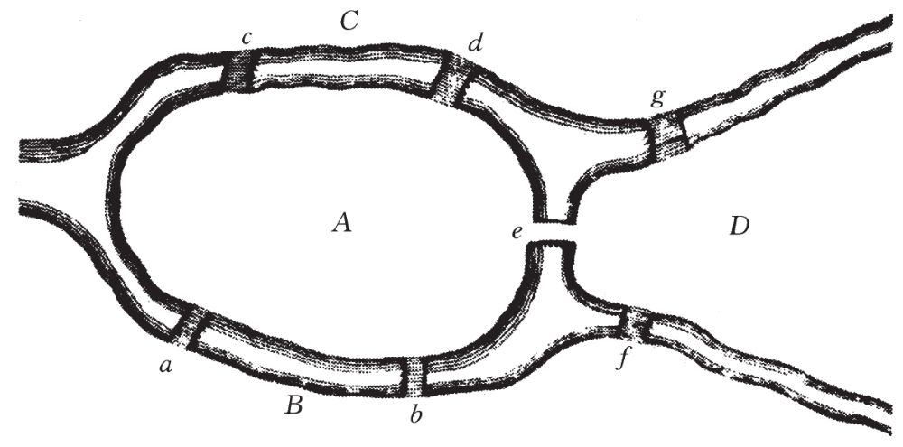
图4-1 欧拉1736年论文中的哥尼斯堡七桥图
欧拉所做的第一件事是，通过消除哥尼斯堡地图上的非必要元素把这个问题翻译成更容易进行数学分析的形式。他把大片陆地压缩成点，现代图论学家称其为顶点。连接大片陆地的桥称为线，在图论中通常称之为边。结果就得到问题的一种抽象表述形式即“图”（graph）：
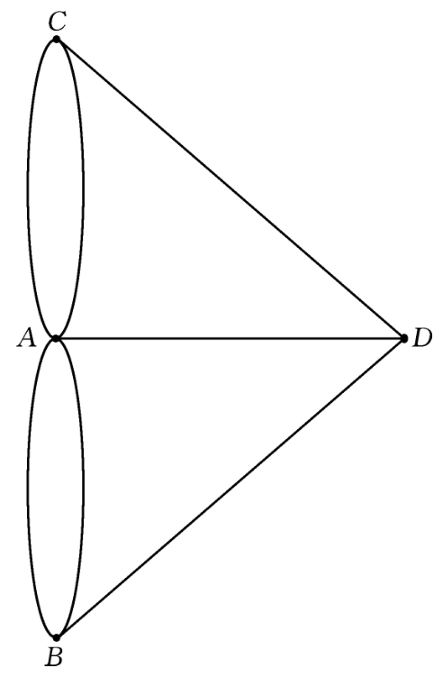
图4-2 从欧拉的哥尼斯堡地图抽象得到的基本图
欧拉获得的重要观察结果是，一个与陆地相对应的顶点，除非作为散步的起点或终点，否则就必然会放射出偶数个顶点。原因很简单：因为每一条边即每一座桥只能走过一次，对于每一条进入顶点的边，一定有一条离开顶点的边与之相对应。因此，有奇数条边交于其上的各顶点即有奇数度的顶点必须是散步的起点或终点。现在看一下这个图，你就能迅速确定，所有4个顶点都是奇数度（顶点C、B和D是3度，A是5度）的。因为一次行走只能有一个起点或终点，欧拉于是自信地断言，哥尼斯堡人要求的那种散步方法是不可能的。作为一个真正的数学家，欧拉继续提出并解决了一个形式更为一般的桥问题，从而显示了数学抽象的力量。“以上述论证为基础，我为自己提出了如下经过推广的问题，”欧拉写道，“给定一条河流及其可能分出的支流的构形，同时给定桥的数目，确定是否可能走过每座桥仅仅一次。”
几乎整整200年之后，瓦佐尼试图把哥尼斯堡七桥问题推广到更复杂的具有无限多个边和顶点的图。欧拉未能做出这一推广，也许是因为无限的概念一直到19世纪末才由康托尔赋予精确的数学形式。在他们第一次会面的时候，爱多士已经向瓦佐尼介绍了康托尔的无限集理论，这个学科深深地吸引着爱多士，以至于为了表达对伟大的康托尔的崇敬，他喜欢在给别人的信上写上“C.（康托尔）与你同在”。瓦佐尼已经解决了无限哥尼斯堡桥问题的一半——他已经发现了存在这种走法的必要条件，但它们并不充分。“我过去习惯于每天与爱多士见一面，那天却犯了一个致命的错误：把我的发现通过电话告诉了他，”瓦佐尼回忆，“我说致命是因为20分钟后他给我回电话告诉了我充分条件的证明。‘真该死，’我想，‘现在我得与他写一篇合作论文了。’”瓦佐尼确信，如果再多给他一点点时间，他就应该能够自己发现问题的解。然而回想此事，他倒为自己未能独立发现问题的解而感到高兴，因为在数学世界里，会有贵族的标签贴在那些与爱多士合写过论文的人身上。但是即使在爱多士出名之后，他对解题的热望以及在解题时表现出来的敏锐头脑，也引起了那些热衷于单独研究的数学家们的忌恨。稍后我们会看到，曾经有一个事件引发了一场争论，这场争论将引起数学界的分裂并给爱多士的学术生涯留下伤疤。
与爱多士合写论文可能会有超越数学世界的结果。1935年，图兰与爱多士合写了一篇有关数论问题的论文，发表在俄国的《托木斯克数学与力学研究所通报》上。10年以后，在战后的布达佩斯，有一次图兰被一个苏维埃巡警拦住了。斯大林命令他的解放者们在大街上随机地把男人们拘起来，用船运到某地去做苦力。士兵命令图兰出示证件。几天前躲避另一次围捕时图兰就已丢失了身份证，但当他把手伸进手提箱时发现了一份与爱多士合写的论文。图兰把这篇论文交给这个士兵，这个士兵知道图兰在苏维埃出版物上发表过文章后颇受震动，于是让他走了。后来图兰把这事作为“数论的惊人应用”一本正经地向爱多士做了汇报。
由埃丝特·克莱因提出的一个小小的数学之谜导致了另一个意想不到的超越数学的结果，而这个结果将改变她和塞凯赖什的一生。“我确确实实记着这个瞬间，”埃丝特在做出这一发现60年之后说，“我正在家里坐着——我们有一套简单的房子，我和父母住在一起。我有一个角落可以坐下来思考并研究数学。”她正在一块垫板上画几何图形——用直线连接一些随机的点，正在这个时候，她注意到了某种困惑了几何学家们2 000多年的东西。
为了能够理解埃丝特的发现，我们将不得不暂停片刻来看看几个非常简单的定义。多边形，当然是由直线构成的封闭平面图形——设想一块由边界围住的不规则田地。数学家们把多边形分成两大类：一种是凸的，另一种是非凸的。凸多边形是没有“凹陷”的简单多边形。从数学上讲，可以用两种等价的方式来给凸多边形下更精确的定义。第一种是说，从图形内部测量，由凸多边形两条毗邻的边形成的角小于180度，这就是所谓“没有凹陷”的好听的说法。凸多边形也可以撇开角度概念来定义：连接凸多边形内部任何两个点的直线总是全部落在多边形内（参照图4-3）。如果一个多边形是非凸的，则连接图形内部某些点对的直线将会穿过边界并离开多边形（参照图4-4）。
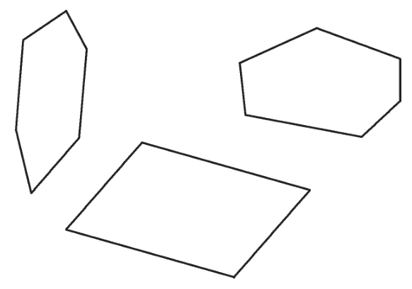
图4-3 凸多边形
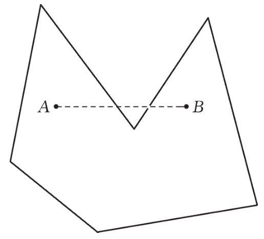
图4-4 如果一个多边形是非凸的，则连接图内某两点的直线会穿过边界，越出图形
埃丝特注意到，如果她在垫板上随机地画5个点，只要任何3点都不在同一直线上，那么其中总有4点构成一个凸四边形（有4条边的凸多边形）的顶点。总是如此！这个奇怪的现象使她感到迷惑。作为一个出类拔萃的问题解决者，她意识到这断言需要证明；仅仅是举出一个例子又一个例子是不够的。她并未花费太长时间就发现了如下的简单证明。
埃丝特以构造这5个点的“凸外壳”来开始她的证明。所谓凸外壳就是可以画出的最小的包含所有这些点的凸图形。设想在所有点之外围上一个套索，然后将它收紧（参照图4-5和4-6）。绳索将会被阻挡在最外围的点上，因为绳索是围在这些点的外部，它不会有任何凹洞。
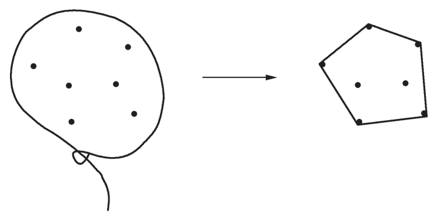
图4-5 凸外壳可通过围住一组点形成
在最简单的情况下，套索围着4个点。如果这种情况发生，我们已经成功了，因为这4个点确定了一个凸四边形（图4-6）。
点也可能以如下的方法来排列，即套索围住所有5个点。在这种情况下，我们要做的是连接两个对角线点，如图4-7中的B和D。四边形ABDE显然是凸的。
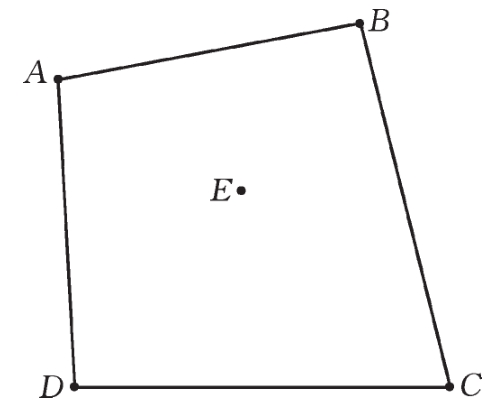
图4-6 如果凸外壳形成一个四边形，就成功了
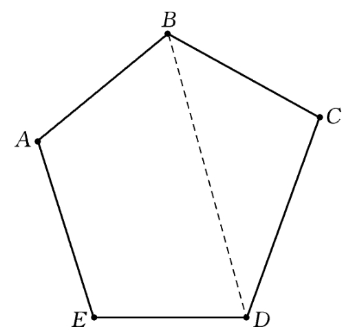
图4-7 如果这个凸外壳是五边形，则连接两个顶点总能够产生一个凸四边形ABDE
唯一剩下的可能情况是，点以这样的方式来排列，套索只能围到其中的3个。(5)可以证明在这一情形下我们也不难找到一个凸四边形。
过三角形内部两点A和B画一条直线。显然，三角形必有一条边位于此直线的一侧。在我们的图形中这些点就是D和C。你能看出四边形ABCD是凸的。
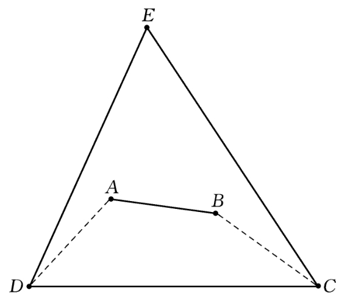
图4-8 如果这个凸外壳是一个三角形，可以画出一个凸四边形ABCD
Quod erat demonstrandum.我们成功了。我们已经分析了5点的每一种可能的排列方式并证明了每一种排列方式是如何包含一个凸四边形的。
对埃丝特来说，这个证明简直是“像儿戏一样简单”。她认识到，有意思的是：“这是一种新问题。我想那就是它的真正价值。”埃丝特难题把几何学与组合学结合了起来。组合学是与计数有关的数学分支。爱多士可能是20世纪最重要和最多产的组合学家，其厚厚的有关此学科的经典论文集名叫《计数的艺术》（The Art of Counting）。在爱多士之前，组合学只是一堆为数不多和互不关联的技巧与问题。伟大的数学家偶尔会涉猎组合学，但他们大部分的精力花费在其他领域之中。在这个世纪里，多亏爱多士，这个学科才作为一个有自己的权利、自己的教科书和期刊及国际会议的数学领域而出现。组合学对通信网络及计算机设计也很重要，而且几乎在科学技术的每一个分支中都有应用。爱多士在这些领域的影响尽管间接但却是巨大的。例如，已经有了专门研讨爱多士对计算机科学的兴趣的会议，尽管他从未写过一篇与计算机有关的论文。他也是贝尔实验室数学小组备受尊敬的常客，尽管他从未写过一篇有关通信网络的论文。对爱多士来说，研究组合学也像所有其他的兴趣一样，是为数学而研究数学。爱多士对这个领域的兴趣正是从埃丝特的问题开始的。
埃丝特把她的难题带到无名氏雕像下说给她的朋友们听。他们很快地解决了这个问题并推广到一般情形。在经过一番努力之后，他们证明了，当9个点随心所欲地散布在平面上，必然会出现一个凸五边形。如果有足够多个点，那么凸六、七、八或其他边数的多边形也是必然的吗？如果是这样，确切地说在每种情况下需要多少点呢？这些是更难的问题，显然已不可能有“像儿戏一样”的解法。爱多士和塞凯赖什都立即被这个问题迷住了。像埃丝特一样，他们也看出来这是一类新问题。但塞凯赖什回忆说，他还有另一个与几何学或组合学无关的更深层次的动机。“我没有其他的感觉，我想解决这个问题，因为它是埃丝特提出来的。”他后来回忆说。塞凯赖什认为，爱多士对这个问题的兴趣也是受了对问题创造者的更深层次和更人性化的兴趣所激发。“我确信，如果有人提出这样的看法，他将会表示强烈反对，但那并不意味着这种看法不对。”塞凯赖什说。
爱多士一直特别喜欢埃丝特，他爱怜地称她为埃泼西，即他常用的数学式昵称“埃泼西龙”的缩写形式。更重要的是，爱多士的母亲认可埃丝特并欢迎她到家里来。“我非常相信，如果爱多士娶了埃丝特，这个老妈妈一定会非常高兴，”塞凯赖什猜测，“据我看，埃丝特曾有过让爱多士结婚的绝佳机会。但是这很复杂。没有发生此事对这个世界来说也许更好些，因为他能够真正地把自己投入到数学中去。”
当爱多士想让塞凯赖什去听一个新的证明或猜想时，他就会像吟诗一般哼道，“塞凯赖什·乔，快开动你聪明的头脑，”乔是其名字乔治的缩称，塞凯赖什总是以此在数学论文上署名。在埃丝特提出其推广的问题两周之后，塞凯赖什终于获得了一次反击的乐趣，命令爱多士：“E. P.，快开动你聪明的头脑！”他发现了一个巧妙的方法来证明他们的猜想——当足够多的点随机地散布在平面上，则必然会形成一个具有特定边数的凸多边形。
为了证明他们的猜想，塞凯赖什已经重新发现了一条定理，而他自己却没有意识到。这条定理于1928年已由一位博学多才的英国青年弗兰克·拉姆齐（Frank Plumpton Ramsey）发表。拉姆齐生于1903年并在英格兰的剑桥长大，他是莫德林（Magdalene）学院院长、数学家阿瑟·拉姆齐（Arthur S. Ramsey）的儿子。弗兰克的弟弟是坎特伯雷的大主教。在其短短的一生中——他在27岁生日前一个月死于慢性肝功能紊乱——拉姆齐仅写了少量的数学、哲学及经济学论文，而其中多数都成为经典。
像爱多士一样，拉姆齐在家里由母亲教育。在几年的家庭教育之后，拉姆齐离家进入温切斯特公学，在那里他的才华很快崭露头角。一天拉姆齐向朋友们宣布他想学习德语。他回家拿来一本语法书和一本字典，几周之后他竟可以阅读和批评奥地利物理学家、哲学家马赫（Ernst Mach）的原版书《感觉的分析》（Analysis of Sensations）了。
拉姆齐很快地读完温切斯特公学，进入剑桥的三一学院。他最终获得数学科目一等成绩应该没有问题，但拉姆齐不知疲倦的头脑是任何学科都限制不了的。他才16岁的时候，剑桥的经济学家们聚集在一起商量如何使他们的思想经受住拉姆齐敏捷而深刻的研究。凯恩斯（John Maynard Keynes）称拉姆齐“以惯于处理更大难题的轻松手段掌握了我们这门科学的技术方法”。
对拉姆齐来说似乎没有什么事情是太困难的。凯恩斯称拉姆齐所写的两篇有关经济学的论文中的第二篇是“曾经对数理经济学做出过最重要贡献的文献之一”。拉姆齐也写了一些与维特根斯坦（Wittgenstein）的逻辑悖论有关的重要文章，他还有一些论文对概率论给出了创造性的解释。不过他最重要的工作是在数理逻辑领域，这方面的研究使他发现了后来又被塞凯赖什重新获得的那条定理。具有讽刺意味的是，后来成为他名声的主要来源的拉姆齐理论，正如罗纳德·格雷厄姆和乔尔·斯潘塞（Joel Spencer）在《科学美国人》上一篇介绍该理论的文章所说，“对于他所未能得到的一般情形的证明却是不必要的”。
拉姆齐的论文是解决怀特海（Alfred North Whitehead）与罗素在他们不朽的著作《数学原理》中提出的一些基本问题的尝试。受欧几里得几何学的启发，怀特海与罗素试图在他们的书中证明，全部数学都能从一套固定的公理集合与逻辑规则推导出来。德国数学家希尔伯特（David Hilbert）把这个思想推进了一步，并猜想你可以（至少在原则上）发现一个能够自动地判断数学命题之真假的程序。换言之，计算机可以用于决定任何数学判断真实与否。这里，关键在于“原则上”这个词。数学家们无须为他们的生计而害怕，因为这样的计算机即使存在也不可能提供像“天书”中那种优美而富有启发性的证明；哪怕是最简单的定理，计算机的证明也会是极端冗长与丑陋的，并且不能提供指导与启发。罗素和怀特海在《数学原理》中对等式1+1=2的形式证明就是出名地冗长含糊。按照希尔伯特所希望的程序，一台计算机可能需要几千年的时间才能判定一个命题是真还是假，但希尔伯特数学信念的要素，恰恰在于相信这样一个证明——任何证明——必定存在。“我们常常在内心听到这样的召唤：存在一个问题，去寻找它的答案。你可以运用纯推理找到答案，因为在数学里没有ignorabimus。”没有永远的不可知。
几年之后，英国数学家艾伦·图灵（Alan Turing）发展了库尔特·哥德尔（Kurt Gödel）所开创的工作，粉碎了希尔伯特的信念，他证明了即使是在原则上，给机器编制程序然后让它去确定所有判断的真假也是不可能的。在一篇论文中，哥德尔证明了存在不可判定的数学命题，即既不能证明也不能证否的命题。这篇论文在数学与哲学王国里引起的震撼，至今余波未平。
拉姆齐是在尝试去做由希尔伯特提出而后来被哥德尔与图灵证明不可能的事情时发现他的定理的。如若不是塞凯赖什重新发现了这条定理，它也许至今仍鲜为人知。爱多士很快发现了拉姆齐的论文，因为从他还是一个本科生的时候起他就习惯于阅读手头能够得到的每一种数学期刊。
尽管拉姆齐定理的数学陈述使用了抽象难懂的形式主义语言，但当我们在晴朗的夜晚仰望苍穹时，就能够理解其重要性。乍看起来，明亮的繁星似乎是随机地散布在天空中，经过仔细的观察之后也许会发现，星星似乎描绘出各种图形的轮廓：直线与矩形、五边形和圆。古代的占星家把这些图形看成是诸神和猛兽驰骋天穹的身影，并且认为星星的排列方式显示了一只隐藏的巨手的杰作。拉姆齐的定理提出了一个更加合理的解释。对拉姆齐来说，像我们在天空中所看到的那些形状不仅是可能的，而且只要随机散布的星星数目足够多，那么它们还是必然的。正如美国数学家默慈金（Theodore S. Motzkin）指出，拉姆齐的理论证明了完全的混乱无序是不可能的。
为了向外行的读者解释拉姆齐的定理，爱多士常常借助于一个众所周知的派对（party）问题。6个人被邀请参加一个私人聚会，有生人有朋友。在这些客人中是否总有3个人都是朋友，或总有3个人都是生人？
有许多方法可以解决这个问题。最简单的方法可能是首先把它转变成与一个图有关的问题，与欧拉在解决哥尼斯堡七桥问题时的做法类似。在这种情况下，用顶点或点代表派对参与者。若两个人彼此相识，就用实心的边或线把他们连接起来；否则用虚线连接。每一个顶点与其他各顶点都有一条实线或虚线相连。如果一个图里每一个顶点都与其他的顶点相连，这种图叫作完全图。
如果3个人都互相认识，图中就会包含一个实线三角形；如果3人皆相互陌生，则图中将包含一个虚线三角形。派对问题于是被简化为：图中的边能否用这样的方法画出来，使得其中既无实线三角形也无虚线三角形。
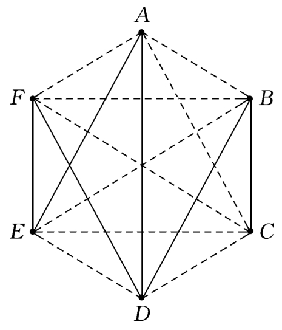
图4-9 派对问题里的关系用一个图来代表。朋友之间由实线相连，生人之间由虚线相连。能否画出一个图形既无实线三角形也无虚线三角形？
回答这个问题的一个方法就是仔细地检查每一个可能的派对图，看看是否存在既无实线三角形也无虚线三角形的图。这么做有多困难？图形中包含15条边。（你能够用两种方法确定这些边的数目，要么从图上直接数出它们，要么注意6个顶点中的每一个顶点与另外的5个顶点相连，这样共给出30条边。但是这个方法把每一个顶点都数了2次——AB和BA都包括进去了，因此你必须除以2，这样就给出了正确答案——15条边。）15条边中的每一条都要么是实线要么是虚线，因而图的总数就第一条边来说是2，就第二条边来说则要乘以2，就第三条边来说要再乘以2倍，如此直到第十五条边。即为2的15次幂或215，这样产生了32 768个图形！计算机可以迅速地检查所有的这些图，但是许多人在远远没有完成这种检查之前可能头发就掉光了。
稍微借助一点逻辑就能避免这样的自动脱发。首先把你的注意力集中于一个顶点。具体地，将这个顶点记为A。
像其他所有顶点一样，顶点A由实线或虚线与其他每一个顶点相连。显然这5个边中至少有3个必是实的或必是虚的——如果实边数少于3，则虚边数就会大于3。在图4-10中，我们从A引出3条实边（如果我们假定这些边是虚的，则论证相同）。剩余的边无关紧要。
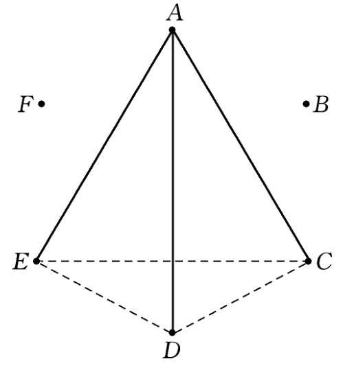
图4-10 如果从A引出的3条边是实（或虚）线，避免实（或虚）线三角形的结果却产生了虚（或实）线三角形。
牢记我们在努力避免画出实线三角形或虚线三角形。如果EC，ED或DC这3条边中有一条是实线，结果就会产生一个实线三角形。因此这3条边中必须是没有一条实线：所有3条边必须是虚线。但是这些边本身却构成了一个三角形ECD！在极力避免画出实线三角形的同时却画出了一个虚线三角形。如果我们以与A相连的3条虚线开始我们就会被迫画出一个实线三角形。这恰恰是我们所要着手证明的：在包含6个点（人）的完全图（派对）中，必定有一个实线三角形（3个人互相认识）或一个虚线三角形（3个人互相陌生）。
拉姆齐的定理是派对问题的推广。这个定理说，随着派对越来越大，相互认识或相互陌生的人群也会越来越大，这是不可避免的。这些不断增加的、巨大的、必然的朋友或生人群具有与克莱因问题中的凸多边形或天空中的星座相应的结构。
爱多士喜欢在演讲中指出，能确保一群人中有3个朋友或3个生人的拉姆齐数（派对的大小）的计算是相当简单的，但随着朋友或生人数目的增加，这个问题就会迅速变得极其困难。数学家们用符号R（3，3）来表示一个其中必有3人互为朋友或3人互相陌生的派对的大小。即使没有敏锐的洞察力，一部计算机也能通过机械地检查不同大小的派对直到获得所求答案：一个6人的派对。即使在很慢的计算机上这也无须很长时间，因为6个人的不同派对的数目仅为32 768。
现在我们问，为了保证总是有4个相互认识的朋友的人群或4个相互陌生的人的人群，这个派对应该有多大呢？换言之，R（4，4）是多少？已经证明了答案是18，尽管如爱多士所说，这个证明“不再那么简单”。现在确实需要依靠聪明与机智了，因为一张具有18个点的图可以有大约1.14×1046种表示方式。要想对这个令人目眩的数字有一个印象，需要不切实际的比喻。有一个这样的比喻是，即使你身体里的每一个原子都是一部高速计算机，让这些计算机一齐开动起来，在相当于宇宙年龄的时间内都无法算出这个解来。这就是数学推理的力量，用推理代替蛮力。
但数学推理的力量很快又被这个派对问题超越。没有人确切地知道需要多大的派对才能保证由5个相互认识的朋友或不认识的生人组成的小集团必然存在。世上最聪明的数学家们半个多世纪的工作已经把答数限制在42与50之间。在其关于拉姆齐理论的讲座中，爱多士乐于用他杜撰的离奇故事使听众对问题难度的惊人增长留下印象：“设想有一个恶魔威吓人类：要么告诉我5人问题的答案，否则我就毁灭整个人类……我们最好是乖乖地用数学和计算机尽力计算出答案。但如果他拿6人问题相威胁，那么我们能做的最好的事情就是在他毁灭人类之前把他毁灭，因为对6人问题我们束手无策。如果我们已经聪明到足以获得其数学证明，我们就可以将恶魔打入地狱了。”
当爱多士努力研读隐藏在SF之书中的拉姆齐数时，其他人则在绞尽脑汁试图揭开另一本书字里行间的秘密。拉姆齐定理和机会逻辑能够确保他们取胜。迈克尔·德罗斯宁（Michael Drosnin）在其畅销书《圣经密码》（The Bible Code）中发展了耶路撒冷希伯来大学里普斯（Eliyahu Rips）的工作，挖掘了埋藏在《圣经》中的信息。通过使用一部计算机扫读希伯来《圣经》中的304 805个字母，德罗斯宁宣称发现了足够的预言和征兆来挑起约书亚、诺斯特拉达莫斯及神奇卡纳克的共同嫉妒(6)。德罗斯宁通过检查《圣经》中固定间距的字母来找出他的信息。下面是一个并非取自德罗斯宁大作的例子，研究一下英王钦定版（KJV）《圣经·出埃及记》中的一段话（31：28）：“And hast not suffered me to kiss my sons and my daughters? thou hast now done foolishly in so doing.”从“daughters”（女儿）中的R开始跳过4个字母（忽略空格和标点）到“thou”（你）中的O，再跳过4个字母到“hast”（已经）中的S，如此等等。结果得到单词“ROSWELL”（罗斯韦尔）(7)，以“thou”中的U开始，跳过7个字母得到F，接着再跳过另外7个字母得到O。于是，单词UFO隐藏在包含ROSWELL的同一段文字之中，有人认为这证明《圣经》预言了新墨西哥沙漠外星人的到来。
德罗斯宁通过使用计算机使自己摆脱冗长乏味的搜索，发现了许多似乎很重要的单词和词组并列贯穿在《圣经》之中。例如他发现，隐藏单词“达拉斯”（Dallas）(8)挨着“肯尼迪”（Kennedy）。使用这种技术，德罗斯宁声明已经发现了与人类历史上几乎每一个事件和人物有关的预言：拉宾遇刺，海湾战争，阿道夫·希特勒，比尔·克林顿，等等等等。
隐藏在《圣经》字里行间的“预言”与古代人在沙漠的天空中见到的星座是一样的。尽管不可能去证明这些星座是被上帝或诸神之手撒在天空中的，拉姆齐的理论告诉我们，如果给定足够的字母或星星，这一切都是必然的。物理学家、怀疑论者托马斯（David Thomas）研究了英王钦定版《圣经》《战争与和平》以及其他著作，既有圣典亦有凡作，从其中的文句搜索预言。与德罗斯宁研究希伯来《圣经》的情形一样，他在这些著作中也发现了大量的信息。一些支持《圣经密码》的人问道：“这样惊人的巧合怎么会是随机机会的产物呢？”对这些支持者的问题托马斯用一个他认为是真正的问题来回答：“这样惊人的巧合为什么不能是对大量随机数据进行大量试验的必然结果呢？”
20世纪70年代，由太空望远镜发射回来的照片提供了另一个思考拉姆齐理论重要性的机会。1976年7月，海盗1号轨道器在搜寻合适的登陆地点时，拍摄了一张火星上塞东尼亚平原的照片。由轨道器拍摄的山脉照片中有一张极似人或猿的面孔。
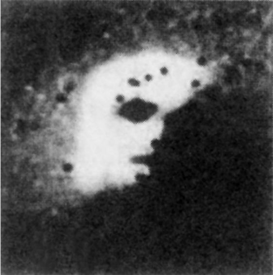
图4-11 弗兰克·拉姆齐在火星上？
美国航空和航天局（NASA）发表了这张塞东尼亚面孔的照片，因为它认为这张照片比海盗号为多沟的火星表面拍摄的其他许多照片都更引人注目和令人惊叹。NASA的科学家对随之而来的公众怒潮并无思想准备。许多人坚持认为这张面孔是人工制造的，当作一个信息放在火星上等着地球人来发现。于是掀起了一场小小的运动，试图解释这张面孔及由目光敏锐并富有想象力的探索者们发现的其他形貌。如果这些人有更好的理解力的话，他们想必会知道，海盗号探测器拍摄的就是拉姆齐的面孔，或至少是他的理论的面孔。
拉姆齐定理所能做的不仅仅是解释欺骗与错觉。按塞凯赖什的想象，从研究散布在欧几里得平面上的点到探索诸如生命起源这样的宇宙问题只是一步之遥。“遗传密码给你一些指令，这相当于说‘点在平面上’，树上突然出现一片树叶”，这与凸多边形出现在平面上是一样的必然。塞凯赖什喜欢告诉他的学生，无须太多的逻辑步骤，“你就能从这样幼稚的问题转移到与我们的存在有关的最大的谜。从某种程度上说，整个生命就是一种方式，拉姆齐定理多少触及了这个问题。确实，我努力说服他们，永远不要听信别人说这类问题的研究只不过是一种无用之举”。
爱多士从来不需要说服，他立即被塞凯赖什的证明所吸引和鼓舞，并迅速地发现了他自己的一个巧妙证明，一个不需要使用拉姆齐定理的证明。爱多士的证明有一个优点，就是提供了一个对为了确保给定边数的凸多边形的存在所需点数的更加精确的估计。埃丝特已经发现为保证一个凸四边形需要有5个点。他们的朋友之一毛考伊（E. Makai）证明，当任意9个点散布在平面上时，其中有5个点将必然地构成一个凸五边形。有人注意到埃丝特·克莱因问题的解5等于2×2+1，即22+1，而且毛考伊的解9等于2×2×2+1，或23+1。数学直觉令爱多士、塞凯赖什和克莱因（无人知道是谁首先想到）猜想，为确保一个凸六边形（6个边）的存在，所需的点数为2×2×2×2+1=24+1=17。还没有人能证明17个点是足够的。然而，就在这两个点数的基础上，年轻的数学家们又大胆地陈述了对这个问题的推广：n条边的凸多边形必然出现，如果有2（n-2）+1或更多个点散布在平面上。尽管塞凯赖什说他们“坚信这是正确的值”，但至今仍没有人能够证明这个猜想。
在成功地解决了埃丝特的问题之后，塞凯赖什回忆说：“我和埃丝特之间的亲密关系已没有任何障碍。”至于爱多士，他回忆道：“他与这整个事情有着某种感情联系，于是便让自己全身心地投入到拉姆齐理论之中，并成为这个理论的最伟大的专家和支持者。”拉姆齐理论——这个术语是爱多士给出的——已成为数学的一个独立领域。
爱多士与塞凯赖什的论文将成为他最早的和最光芒四射的宝石之一，并且在其余生中，他一直醉心于拉姆齐理论及组合几何学。但是，爱多士对论文所解决的这个问题的情感将伴着对问题的提出者和第一个解决者的情感永远萦绕心间。塞凯赖什和克莱因一年之后订婚了。爱多士对这个结局如同对论文中获得的数学结果一样感到幸福，他总是把埃丝特的难题称为“幸福结局问题”。塞凯赖什与埃丝特于1936年结婚。“我记得婚礼那一天，”爱多士说，“恰巧是我获悉维诺格拉多夫（Vinogradov）证明了非同寻常的哥德巴赫猜想的翌日。”这说明了他的思维是怎样把所有的事件都与数学联系在一起。
(1)贝热拉克（Cyrano de Bergerac，1619—1655），法国讽刺作家和戏剧家。他是电影《大鼻子情圣》主人公的原型，1654年为木梁砸中，一年后过世，但死因未明。——译者
(2)爱多士应用他最伟大的发明之一“概率方法”，证明了具有希东所指定的性质的整数列是存在的。但他不能构造出一个这种数列的例子，因而他向能够解决此问题的人悬赏300美元。此奖迄今无人认领，但像爱多士生前提供的所有奖金一样，此项奖金将会由他的朋友们建立的基金会支付给任何有资格获得它的人。——原注
(3)又名“约当曲线定理”，是法国数学家约当（M. C. Jordan，1838—1922）提出的。——译者
(4)尽管爱多士所写的论文比欧拉多，但欧拉写了大量关于物理、天文和其他相关领域的作品。他的著作集共有70多卷，远远超过了爱多士发表的著作。另一方面，爱多士每一年要写几千封数学信件，如果这些信件也都出版的话，相信能够向欧拉的记录提出挑战。——原注
(5)为避免混淆，不许3点共线。——原注
(6)约书亚（Joshua），《圣经》中的人物，继摩西之后犹太人的首领；诺斯特拉达莫斯（Nostradamus，1503—1566），占星学家，预言家，此人宣称自己有预见未来的能力；神奇卡纳克（the Amazing Karnak）可能是指脱口秀节目中约翰尼·卡森（Johnny Carson）扮演的神奇人物，能够通过占卜获得未知问题的答案。——译者
(7)美国新墨西哥州沙漠城市，1947年7月有不明飞行物坠毁于此。——译者
(8)美国城市，美国前总统肯尼迪（1917—1963）在此遇刺身亡。——译者